Mapping from 3D space to 2D image surface, moving from a higher dimensional image to a lower dimensional image
Perspective geometry
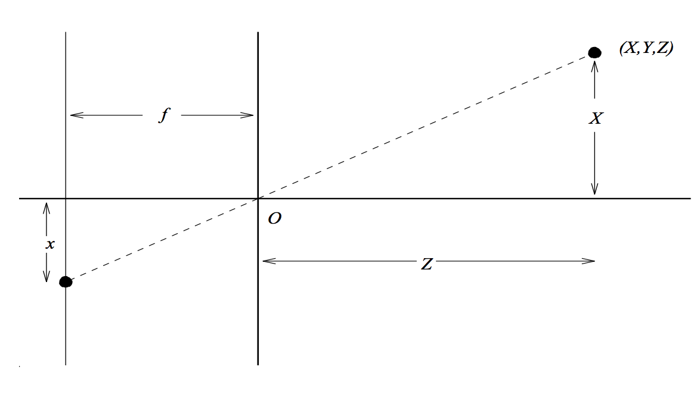
Virtual camera geometry
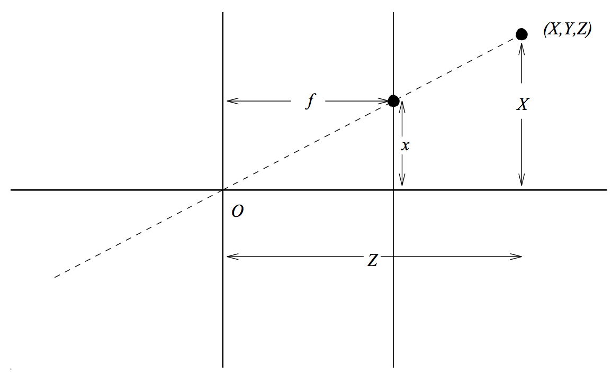
Perspective Formulas
Only for camera-cantered coordinates
Centre of projection
One point perspective projection
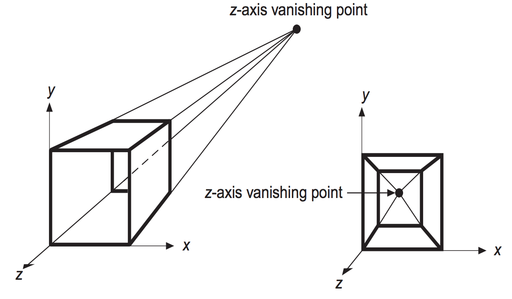
“Two-point” perspective
“Three-point” perspective
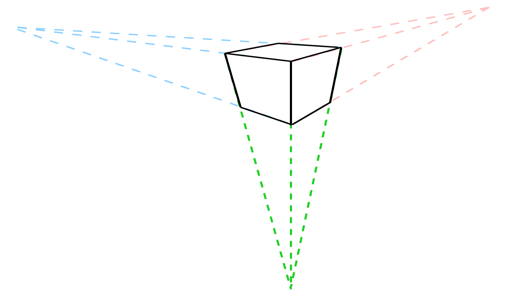
Vanishing points
Parallel lines meet at infinity -> infinity vanishing point
Parallel to one principal axes -> axis vanishing point
Special cases -> “one-point”, “two-point”, and “three-point”
Classes of projection
Subclasses of planar geometric projections
One-point, centred perspective projection example
Two-point perspective projection example
In a two-point projection of a house, left, the viewplane (defined by the view plane normal, VPN), right, cuts both the z and x axes
Ortographics (parallel) projection
Polygonal geometry
In general a polygon is any plane figure bounded by straight line segments and but can comprise these forms
Representation
Polygon mesh: vertex list
Polygon mesh: edge list
Polygons represented as line segments, edges can make polygon clipping and scan-line filling operations easier.
Polygon types
Polygon Properties
In a convex polygon no internal angle is greater than 180 degrees
In a concave polygon there are internal angles that can be greater than 180 degrees
Concave polygons can be represented as a conjunction of convex polygons (convex polygons have certain properties that simplify geometric operations and tesselations).
Level of detail
Vertex spit method
The rendering pipeline I
Graphics Programming
Game engines, and other graphics programs, generally use either Direct3D (Windows) or OpenGL (most other platforms)
Modern PC graphics cards will support some version of both APIs
Game engines (like Unity) build upon these APIs to make development easier
Pipelining
Both OpenGL and Direct3D operate a pipeline, consisting of several different stages
This allows the programmer to perform a number of different operations on the input data, and provides greater efficiency
We will focus mainly on Direct3D pipeline
Direct3D 11 Pipeline
Simplify:
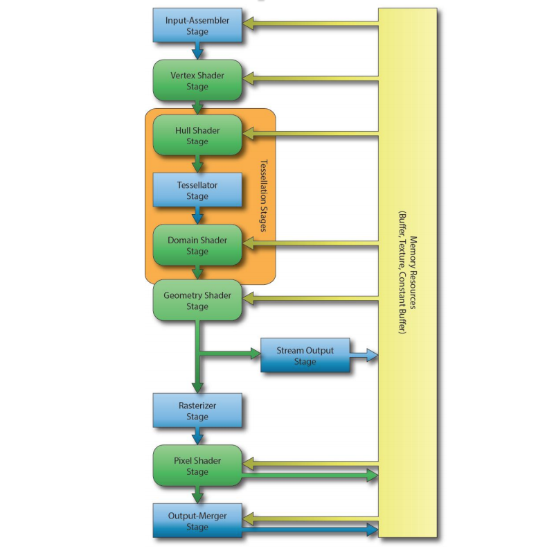
Representing Objects
For efficiency, the graphics card will render objects as triangles
Any polyhedron can be represented by triangles
Other 3D shapes can be approximated by triangles
Input Assembler
Reads data from our buffers into a primitive format that can be used by the other stages of the pipeline
We mainly use Triangle Lists
Vertex Shader
Performs operations on individual vertices received from the Input Assembler stage
This will typically include transformations
May also include per-vertex lighting
Vertex Shader Transformations
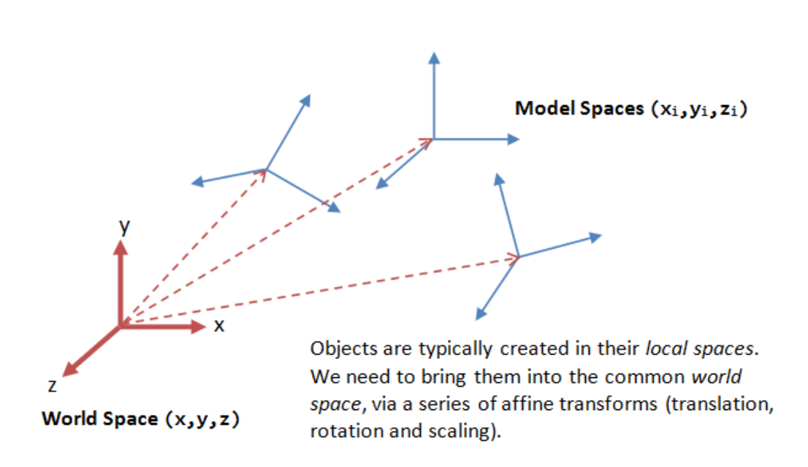
Tessellation(密集) Stages
(Optional Stages)
These stages allow us to generate additional vertices within the GPU. Can take a lower detail model and render in higher detail Can perform level of detail scaling
Geometry Shader
(Optional Stages)
Operates on an entire primitive (e.g. triangle) Can perform a number of algorithms, e.g. dynamically calculating normals, particle systems, shadow volume generation
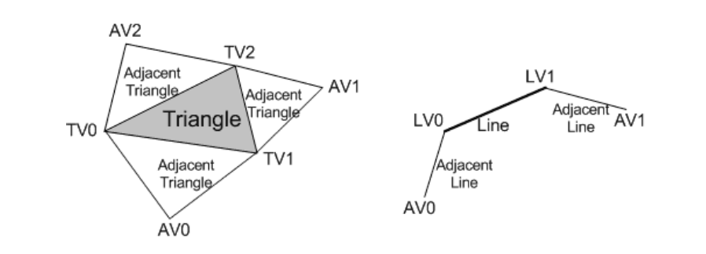
Stream Output Stage
Allows us to receive data (vertices or primitives) from the geometry shader or vertex shader and feed back into pipeline for processing by another set of shaders
Useful e.g. for particle systems
Rasterizer Stage
Interpolates data between vertices to produce per-pixel data.Clips primitives into view frustum
Performs culling
Culling
In order to avoid rendering vertices that will not be displayed in the final image, DirectX performs ‘culling’ Triangles facing away from the camera will be culled and not rendered
Triangles with vertices in a counterclockwise order are not rendered
Use Left hand rule
Pixel (Fragment) Shader
Produces colour values for each interpolated pixel fragment
Per-pixel lighting can be performed
Can also produce depth values for depthbuffering
Output-Merger Stage
Combines pixel shader output values to produce final image
may also perform depth buffering
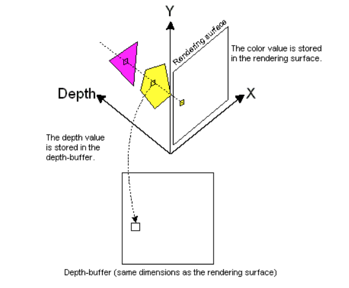
Double Buffering
Don't want to draw objects directly to the screen
The screen could update before a new frame has been completely drawn
Instead, draw next frame to a buffer and swap buffers when complete.
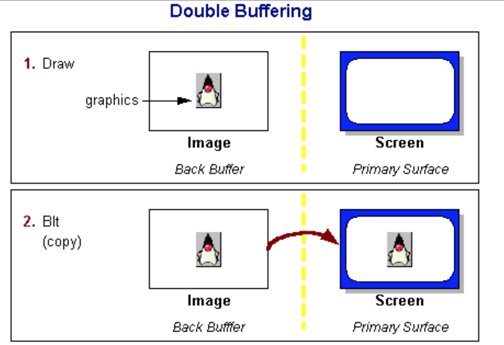
Shader
A very simple Unity Shader
The Structure
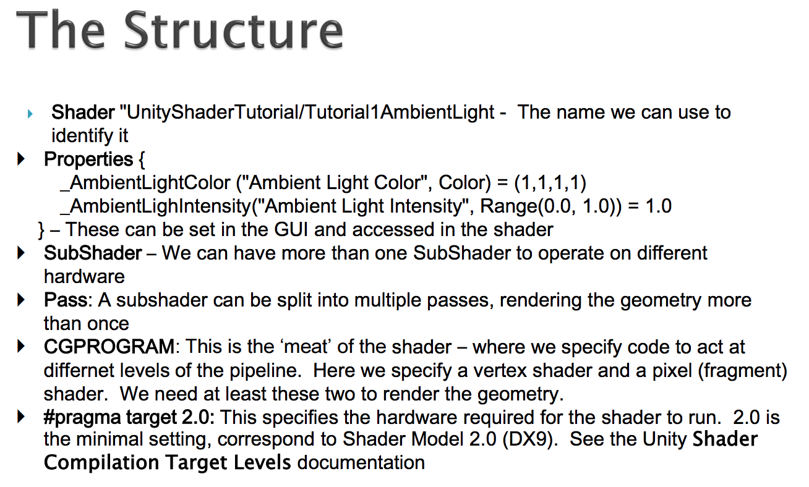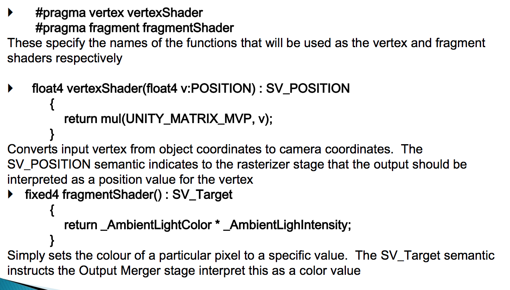
What's permitted in CG/HLSL
The CG/HLSL syntax is quite similar to C
There are a number of permitted datatypes (N.B. Not exhaustive):
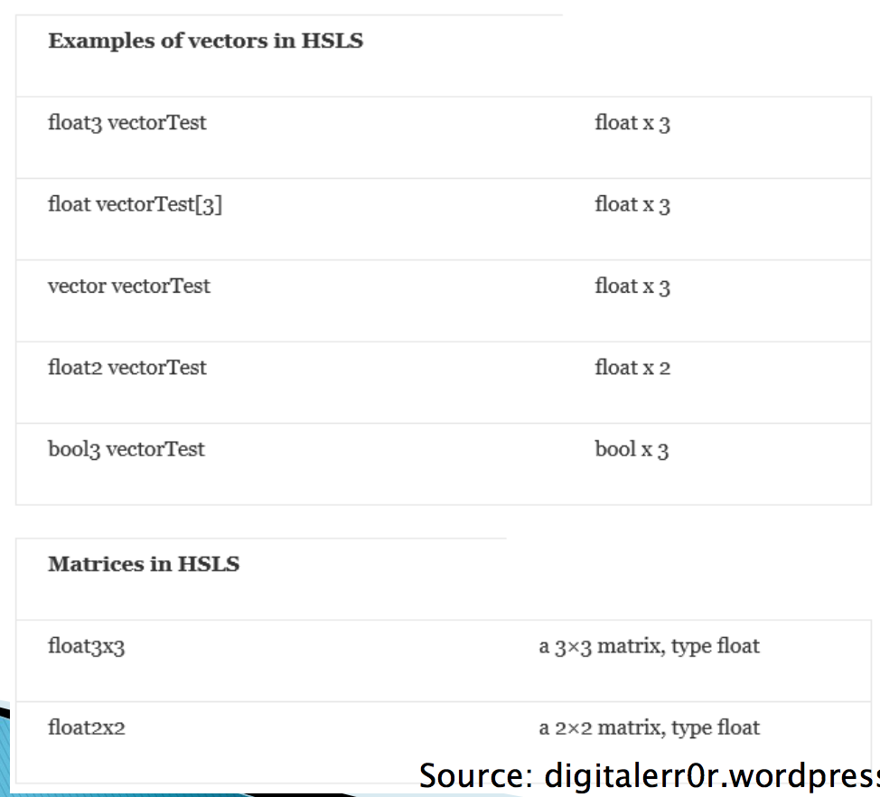
Functions:
Transformation geometry and homogeneous coordinates
Transformation geometry
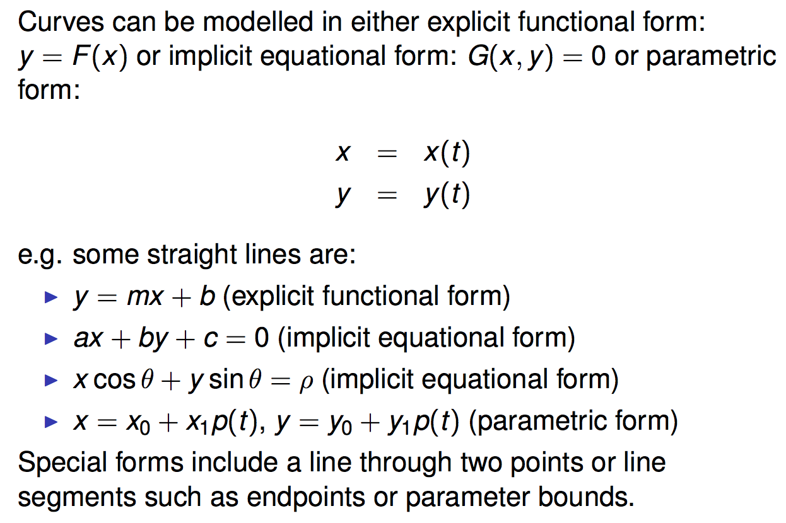
Geometric transformations
Rotation
Rigid body transformations
That is, if two points are a certain distance apart, they will still be the same distance apart after undergoing one of these transformations
Reflection
To combine all the staffs above
Homogeneous coordinates
Homogeneous coordinates introduces a third dummy coordinate w, represented as (x, y, w).
Non-rigid body transformations
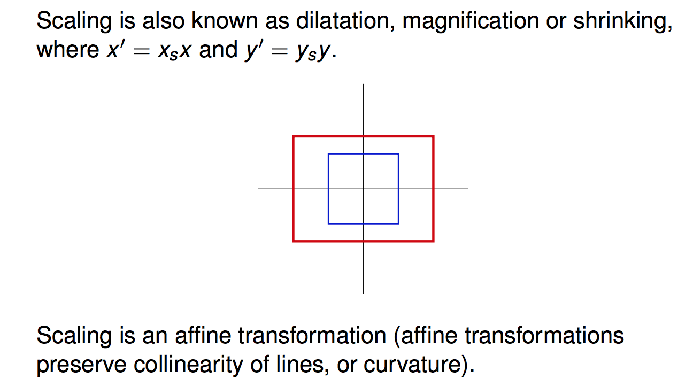
Affine transformations
An affine transformation preserves
collinearity between points (i.e. three points which lie on a line continue to be colinear after the transformation), and
ratios of distances between any two points.
Therefore translation, rotation, scaling and shear are all affine transformations.
Scaling
Shear
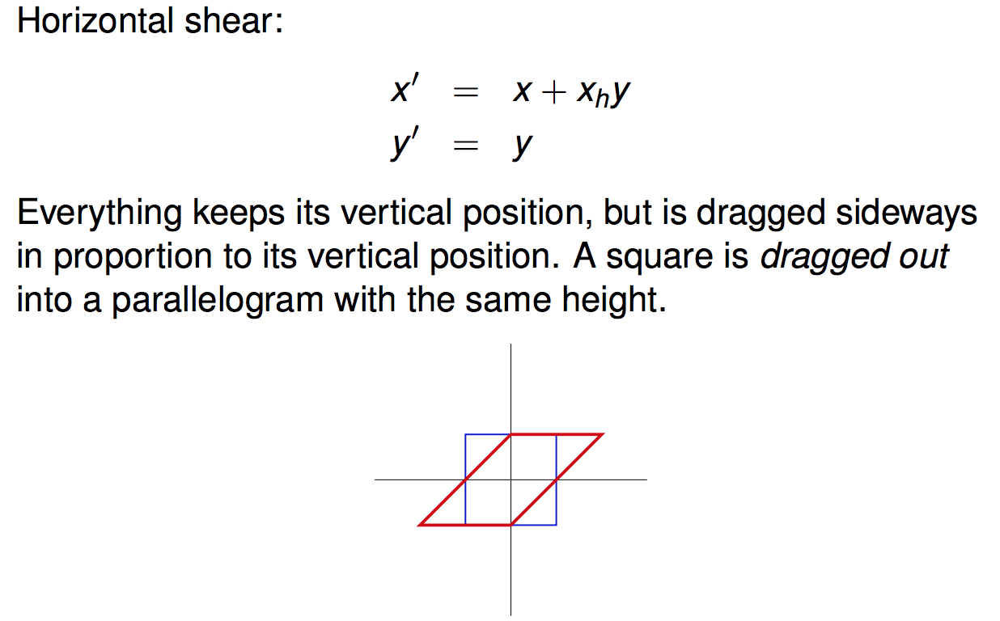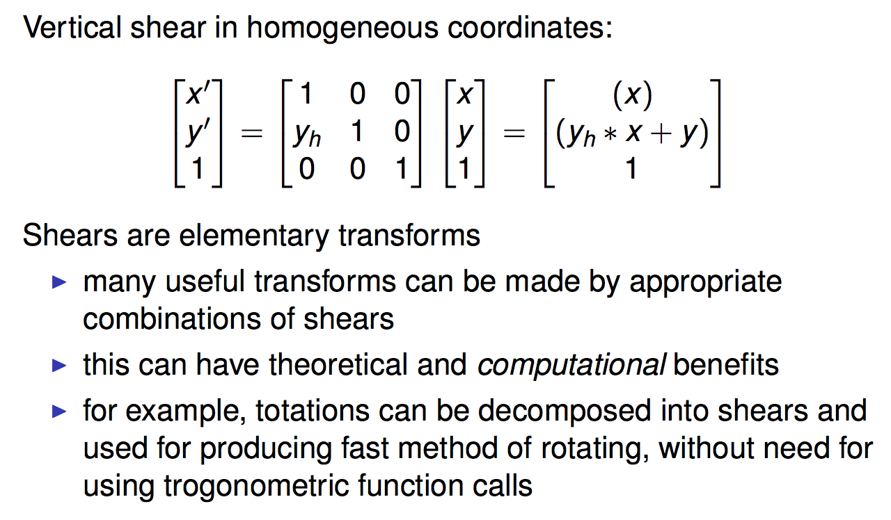
Combining transformation matrices
Affine transformations in 2D
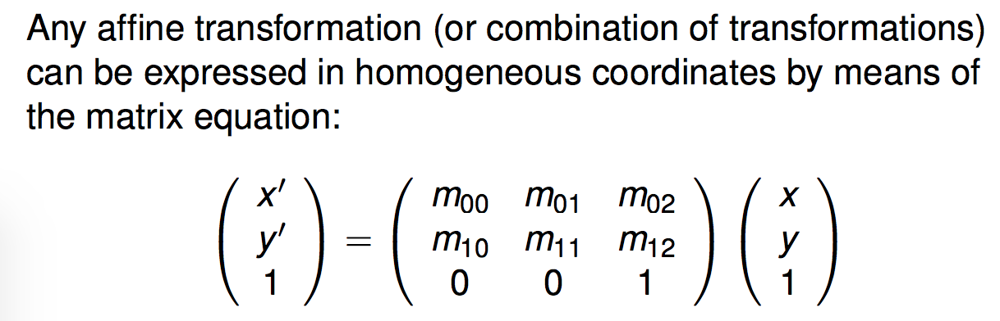
Three-dimensional transformation geometry and perspective
Three-dimensional coordinate systems
3D (Cartesian) coordinates (X, Y, Z) can be considered in terms of left-handed and right-handed coordinate systems. The "right-hand-rule"
Three-dimensional rotation
Need to specify axis of rotation, and by how much such as a 3D unit vector, plus rotation angle.
Convention: rotation angle is clockwise looking along axis of rotation Note, this is consistent with ordinary 2D anti-clockwise convention: Really a rotation around a positive Z axis coming up out of the page in a right-handed coordinate frame.
e.g.
NOTE:
Left side: rotate along y-axis, anticlockwise (negative), degree (90-Theta)
Right side: rotate along x-axis, clockwise (positive), degree (fi)
Overall:
Homogeneous versions
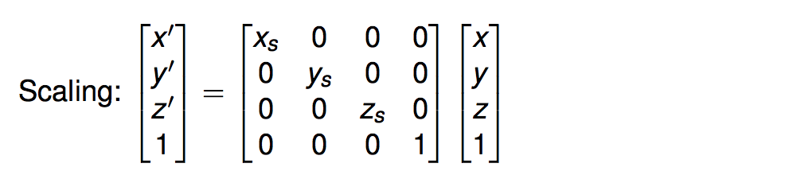
Gimbal Lock
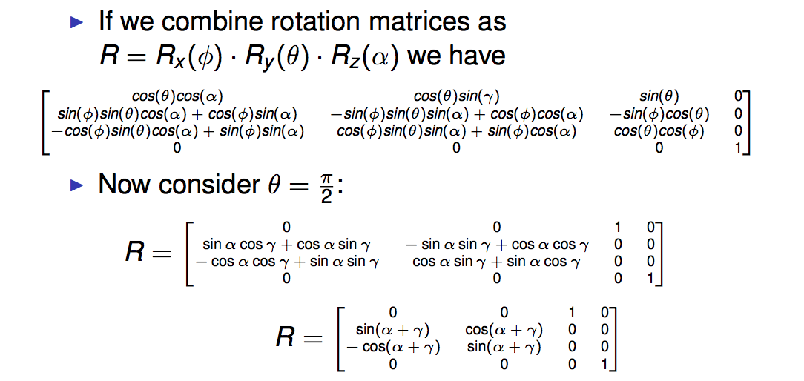
Lost a degree of freedom
Changing the rotation order affects the axis on which gimbal lock occurs, but does not prevent if from occurring.
Quaternions
Quaternions Operations
Quaternions Rotations
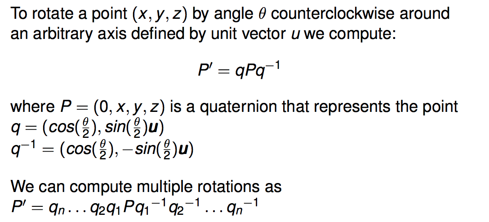
Quaternions to matrices
Activity
TODO: Answer this.
Quaternion's advantages
Avoids gimbal lock
More efficient to calculate
Not dependant on axis rotation order
Easy to interpolate rotations
Arbitrary camera orientation
Matrix form of perspective projection
Illumination Models
Shading and illumination
In real scenes, there is a variation of shading over object surfaces caused by
surface material properties,
orientation of surfaces,
nature and direction of light sources,
view direction and
shadows.
Surface types
self-luminous,
transparent refractive,
transparent translucent,
reflective,
diffuse (also body reflection or matte ),
specular (aka surface reflection or gloss),
textured (macrotexture versus microtexture).
Examples of surfaces
Self luminous:
Jelly fish glow in dark.
Radioactive isotopes.
Transparent refractive:
glass
water
Transparent translucent: (light interacts in more complex way)
scatters
Reflection:
diffuse: carpet
specular: polished steel
These shading patterns can provide useful perceptual clues about the 3D structure of the scene.
Isotropic surfaces (各项同性表面)
In isotropic surfaces the relationship between the incoming (or incident) and outgoing (or reflected) direction of light is the same over the whole surface (otherwise anisotropic).
Illumination models generally most often consider isotropic surfaces only, however:
Certain kinds of material (such as velour) and certain rock or stone faces (look different depending on angle that you view them).
As a result of asymmetric microtexture.
Shading model vs Illumination model
Differences:
the illumination model captures how light sources interacts with object surfaces, and
the shading model determines how to render the faces of each polygon in the scene.
The shading model depends on illumination model, for example
some shading models invoke an illumination model for every pixel (such as ray tracing),
others only use the illumination model for some pixels and the shade the remaining pixels by interpolation (such as Gouraud shading).
The illumination model is about determining how light sources interacts with object surfaces
Whereas shading is about how to interpolate over the faces of polygons, given the illumination.
The choice of illumination model is a compromise between modelling the physics fully, and the computational cost.
Simple illumination models do not consider shadows, reflections or photon-based effects (such as radiosity).
In full ray tracing one considers all rays of light and their recursive interaction between each object —very computationally complex!
In limit can’t model exactly since (ray tracing is undecidable: not Turing computable), so have to make decision about model limitations no matter what, e.g. how many time will we recurse (in other words how many times will we allow for re-reflection) ?
Ambient illumination (环境光线)
Light that comes uniformly from all directions.
Ambient illumination is mathematically an extended form of Lambertian reflection, integrating contributions from an infinite number of infinitesimal point light sources in all directions, instead of a single point light source.
In ambient shading assume that light comes uniformly from all directions (average of full rendering case).
Lambertian (diffuse) reflection (朗博光源； 扩散光源)
Independence of surface orientation
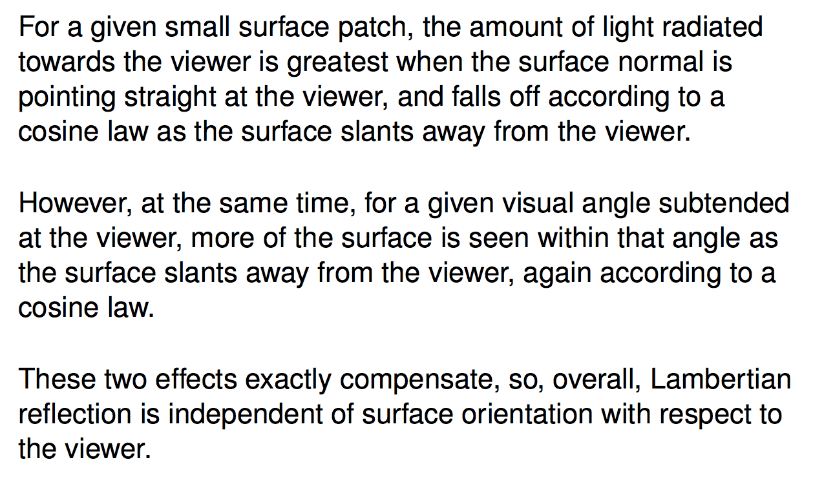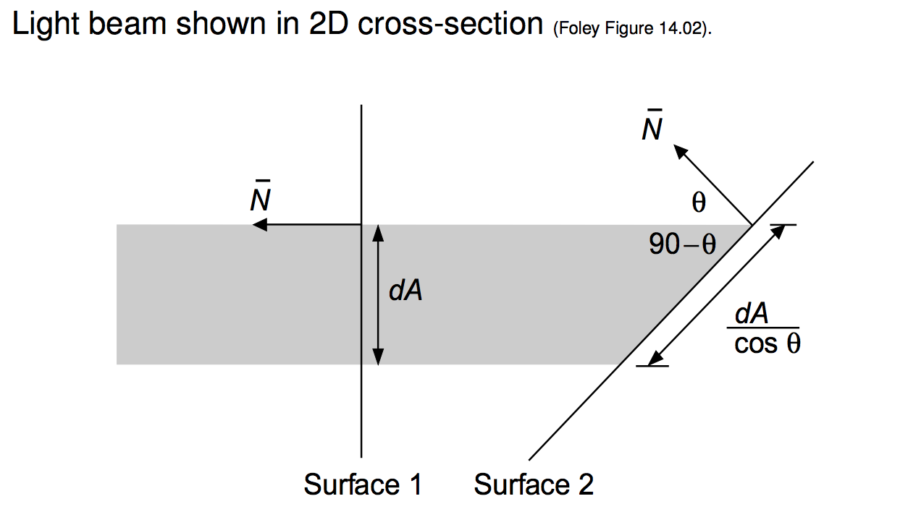
Independence of distance of viewer from surface
Dependence of distance of light source from surface
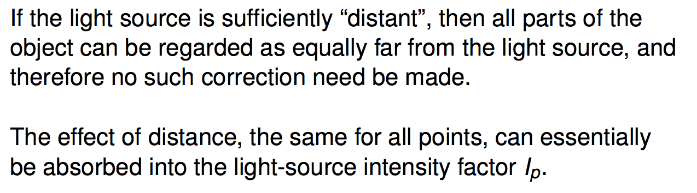
Specular reflection (镜面反光， 高光)
When a ray of light hits a surface, some fraction of it is also reflected immediately at the outer boundary of the surface. This is the specular reflection and leads to highlights and glossiness.
If the surface were a perfect mirror, then the reflection would follow the law of perfect reflection: For an incident ray of light from the light source, the emergent reflected ray would lie in the plane defined by the incident ray and the surface normal, and make the same angle with the surface normal as the incident ray.
For most glossy surfaces, however, the reflected light is spread out (e.g. scratches in steel of texture in plastic), to a greater or lesser degree, from the direction of perfect reflection. This is caused by microscopic unevenness of the surface: there are a lot of little reflecting facets, whose normals vary from the overall surface normal.
The reflection is strongest in the direction of perfect reflection, and becomes weaker for directions away from this.
Specular reflection as a function of angle
NOTE:
N bar is the normal of the surface
Specular reflection exponent
The exponent n is the specular reflection exponent and controls the degree of spread.
High values of n (maybe as much as 100 or 200) lead to a rapid fall-off and sharp highlights, corresponding to a very glossy surface, almost like a mirror.
Very glossy surface: Steel
Low values (as low as 1 or 2) lead to a slow fall-off and spread-out, more diffuse highlights, a more matte surface appearance.
Not glossy surface: Carpet
Specular reflection is independent of material colour
Notice that specular reflection, being from the outer surface, does not involve interaction with the body of the material, and so is independent of Lambertian reflectivity.
Example: coloured reflections on surface of steel.
The colour of a specular reflection depends only on the colour of the incoming light, not on the colour of the material.
Phong illumination model and specular reflection
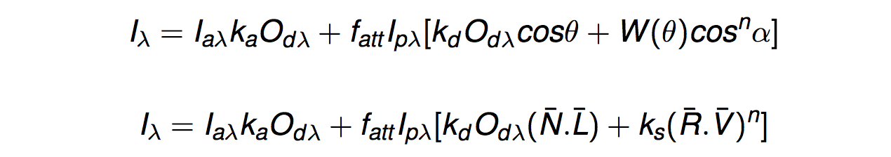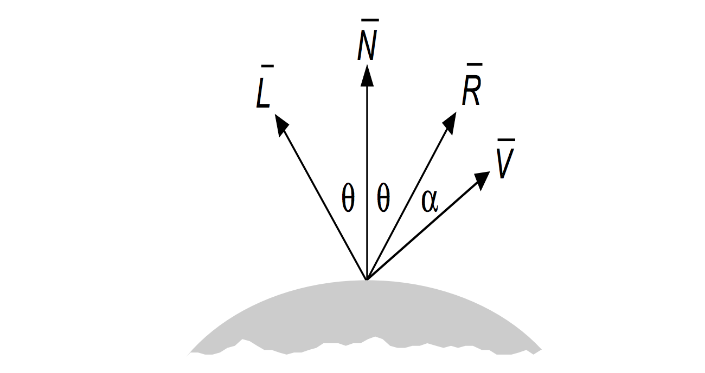
Combined lighting models
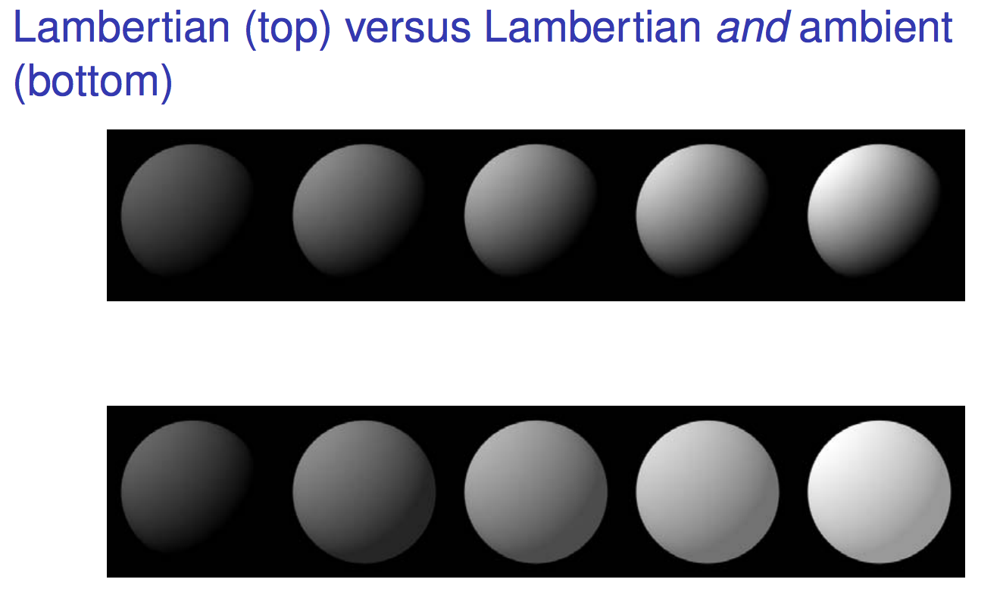
Multiple Light Sources
If there are multiple light sources, then their contributions at any point on a surface add together, less any shadowing.
Refractive index (折射率)
In certain circumstances - such as at uniform planar interfaces of materials with different refractive index - greater realism can be achieved (at greater computation cost), by taking into account how the fraction of incident light reflected (versus what enters the body of the surface) depends somewhat on the angle of incidence.
This is governed by the Fresnel equation.
Surface rendering and shading
Shading techniques
For polyhedral objects, we can use flat shading or full shading
In flat shading, compute the shading at some representative point of each (visible) polygon face (may be a vertex, or the centroid of the face, assuming it lies within the face). Then use this computed value to fill the whole polygon.
In full shading, do the complete shading calculation at each pixel as the polygon is displayed.
In flat shading,
the same value is used to render the entire polygon,
it misses out on shading variations.
It is therefore realistic only for distant viewer and distant light source.
If our polyhedron is really intended as an approximation to a curved object, then either flat shading or full shading are inappropriate.
The discontinuities in surface normal where the face meet will lead to artefactual discontinuities in the shading.
There are two cures for this: Gouraud shading and Phong shading. In both, compute an “average” surface normal at each visible vertex, by averaging the normals of the faces that meet there.
Because of the contrast enhancing caused by lateral inhibition in our visual systems, these false edges are strongly perceived and are therefore even more objectionable.
Gouraud shading
Calculating surface normals
Gouraud shading is also called intensity interpolated shading.
Orientation dependence
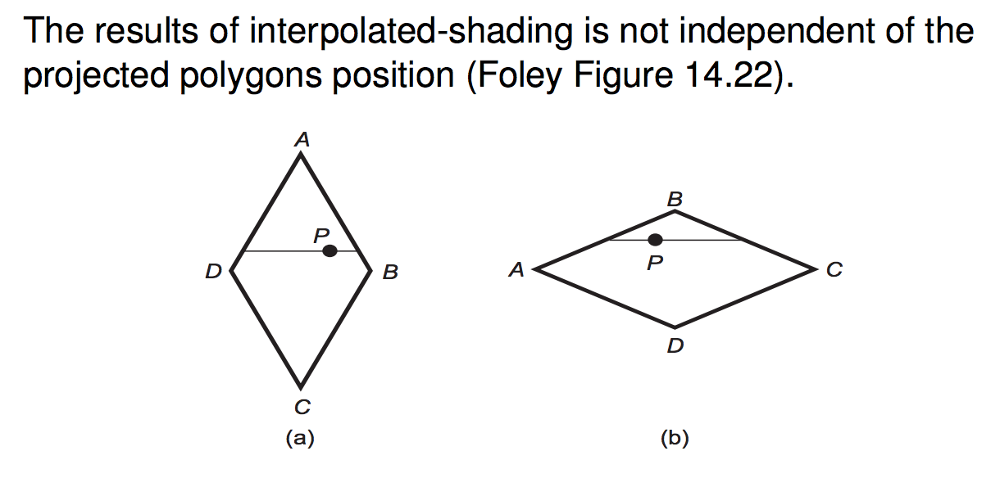
Perspective distortion
Imagine you have a polygon with vertex 1 more distant than vertex 2. In this case you get perspective distortion, since perspective foreshortening means that the difference from one scan line to another increases in the direction of the further coordinate. Under these conditions you can get polygonal silhouettes and edges can look weird.
Phong shading
Gouraud sharing with specular reflection
Intensity interpolation (Gouraud shading) can be used with specular reflection but get less pronounced highlights (according to specular reflection coefficient)
Unrepresentative vertex normals
If interpolation is used, this example should appear like corrugated iron!
Rasterization and Barycentric Coordinates
Introduction to Rasterization
Rasterization is the stage of the graphics pipeline that
first determine the pixels covered by a primitive e (e.g. a triangle) and interpolates the output parameters of the vertex shader (in particular depth) for each covered pixel; then
the interpolated output parameters are then given to the fragment shader; using
barycentric coordinate system (for more sophisticated interpolation).
Rasterization, Visibility & Anti-aliasing
Rasterization involves two additional operations:
Visibility, and
Anti-aliasing
Colour
1.1 Properties of (visible) light
Light is electromagnetic radiation in the wavelength range of 400nm (blue) to 700nm (red).
Colour vision is based on the tri-stimulus theory of colour perception where three kinds of cones are sensitive to red, green and blue light.
Use of tri-stimulus values is known as the RGB model. Another value system is hue, saturation, brightness (HSB) model, closely related to human preprocessing of light (both RGB and HSB are typically supported in most graphics API’s, including Java)
1.2 Response of human cone photo-receptors (relative)
Luminous efficiency of human eye
1.3 Human colour vision characteristics
Colour perception depends on colour context (e.g. what colour and intensity resides next to what other colour etc.)
Blue alone tends to be perceived quite weakly. The greatest colour discrimination(歧视) is in the green to yellow range.
People vary quite widely, even amongst people with “normal” colour vision (adjust your monitor to suit yourself).
Forms of colour blindness include red-green, blue-yellow and achromatic(色盲), has obvious implications for the display of computer graphics.
1.4 Colour
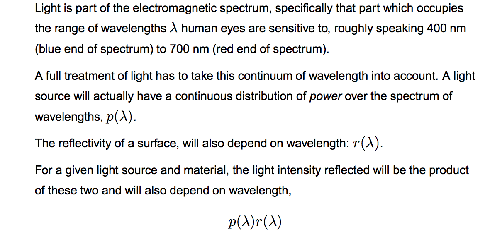
2 Images
Images are two-dimensional (2D) patterns of light, that possess intensity and colour properties, and can be considered as a function (bounded by visibility) that maps a plane into some space of measurements
Digitisation
conversion of analog information into digital information
Digitisation involves sampling over a regular spatial grid, typically square or rectangular (rarely hexagonal or triangular, but occasionally in robotics).
Sampling involves quantisation over intensity values, for each of the pixels in an image. Pixels can be either,
in linear proportion to intensity or in non-linear (adaptive) proportion (as in night vision in the human eye), and either
continuous in value (grey-scale or colour) or binary in value (bitmap representation of 0’s and 1’s)
Digital images
Pixels are the elements sampled by the digitisation process. The digital image, or picture captured from each scene is subject to trade-offs, including
resolution (fineness of sampling or quantisation) versus fidelity, and consequently
fidelity versus storage and processing costs.
2.1 Image formats
Typically header plus pixel data
Header may be fixed record structure, or variable (e.g. attribute/value list), or some combination.
Internal versus external formats
Depends whether the purpose of the format is for the interchange of images (e.g. streaming of images or video over the Internet) or for optimised, random-access during memory and processor operations.
Image header information
Mandatory information:
Magic number (that indicates what format image is, generally used in conjunction with file suffix)
Pixel type such as bit, byte or integer (sometimes unsigned) float, double or complex (imaginary numbers are used by the Fourier transform for smoothing images)
Image size (in rows and columns)
Optional information:
Statistics such as minimum and maximum values of intensities or colour values (very useful for display, means don’t have to parse entire image first)
Additional geometrical information such as aspect-ratio or origin offset
Ownership, program that created image and name of organisation or company
Image pixel data
Images are generally saved in order of raster scanning, like mapping a two-dimensional (2D) array into linear storage (used by computer memory).
Normally left-to-right then top-to-bottom, however sometimes in other orders (always check before making assumptions, when given images to work with)
Pixels may be either be stored using (natural machine units) bytes, integers, floats or (packed) bit fields that need to be converted (unpacked) before displaying.
Often contain padding, to make them an even size for optimised file input and output in many graphics application programming interfaces (API’s).
Variation of pixel data
Images vary in the number of dimension according to their sources and can be either multi-dimensional or one-dimensional.
In Eric Grimson’s enhanced-reality medical surgery, both three-dimensional (3D) nuclear magnetic image (NMR) images and motion sequences are involved
Multi-band images include multiple values at each pixel, the most common being the colour red, green, blue (RGB) and hue, saturation and brightness (HSB) formats.
Multi-spectral remote sensing data is being continuously collected from low-orbiting satellites for geographic applications, such as vegetation or salination information or even spying.
Question: can you think of an example of a one-dimensional image (1D), or even a zero-dimensional (0D) image?
Complex and structured image formats
More complex pixel formats maintain structural information about image regions or other spatial or temporal (Fourier) qualities.
include quad-trees, run-length encoding,
support non-rectangular images of arbitrary shape (however the transparent gif format used on web pages cheats by using background overlays), and
(of course) image compression.
Some image formats use structured picture-description languages, including Postscript, PDF (the format of these lecture slides) and scalable vector graphics (SVG) format frequently used for web pages.
Question: how can a static digital pixel image have (pseudo) temporal qualities?
2.2 image coordinate systems
Coordinate system used by Java and text
Cartesian coordinates
Matrix coordinates
Offset coordinates
Texture
Shadows
Shadows occur where objects are hidden from a light source
Omit any intensity contribution from hidden light sources
Umbra and penumbra (function of size of light source)
Soft shadows and hard shadows (point light source at a distance)
Important perceptual clue for connecting objects to ground (feet in particular)
But object-to-object shadows also important
In general, shadows from many light sources
Planar Projection Shadows
Shadow is projection of polygon onto the surface with the center of projection at the light source
Planar Projetion Shadows
Planar Projection Shadows in OpenGL
Limitations of Planar Projection Shadows
Only do shadows on flat surfaces
Objects must be far enough apart to not cast shadows on each other—although artifacts often hard to detect.
Other Shadow Algorithms
Shadow Maps(Williams, 1978)
Render from light source to compute depth map (z distance to closest object for each pixel in the map).
While rendering, if a point (x,y,z) is visible, map (x,y,z) in the coordinates of the viewpoint to (x’,y’,z’), the coordinates of the point from the light.
If z’ is greater than the value in the z-buffer for that point, then a surface is nearer to the light source than the point under consideration and the point is in shadow. If so, render with a shadow intensity, if not render as normal.
Handles multiple light sources (with multiple z-buffers), moving objects and lights (at the cost of several renderings). Clearly a winning strategy with hardware.
Projecting polygons—scan line (Appel 1968)
Shadow Volumes (Crow 1977)
Texture mapping
Real objects have small surface features
One option: use a huge number of polygons with appropriate surface coloring and reflectance characteristics
Another option: use a mapping algorithm to modify the shading algorithm – Texture mapping – Bump mapping – Displacement mapping – Environmental mapping
2D Texture Mapping
Texture Mapping General
Specifying the Mapping Function
Some objects have natural parameterizations:
Sphere: use spherical coordinates (φ,θ)=(2πu,πv)
Cylinder: use cylindrical coordinates (u,θ)=(u,2πv)
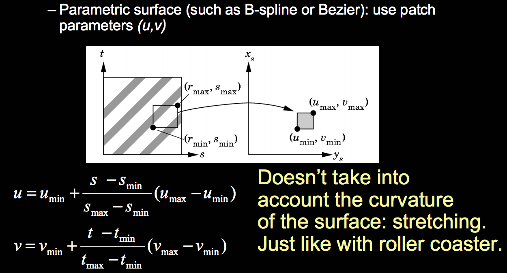
For arbitrary polygonal objects:
Two steps mapping:
To a canonical shape first
Then project normals from object
Or design the mapping by hand
Texture mapping in OpenGL
A parallel pipeline for pixel operations: Texture mapping is part of the shading process
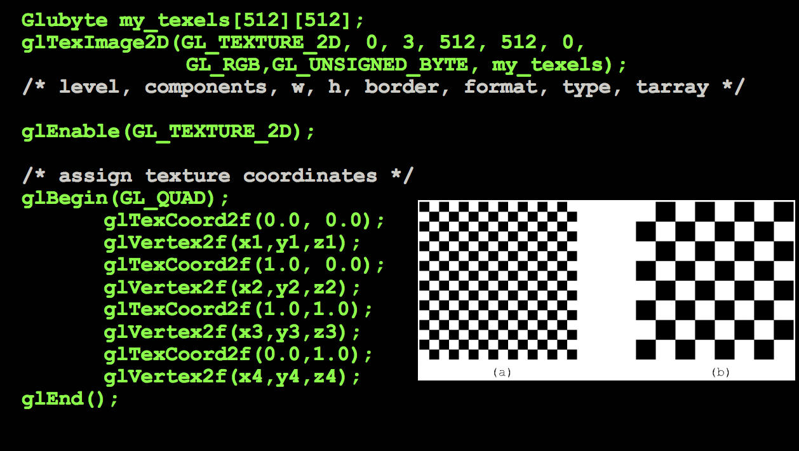
Grungy details we've ignored
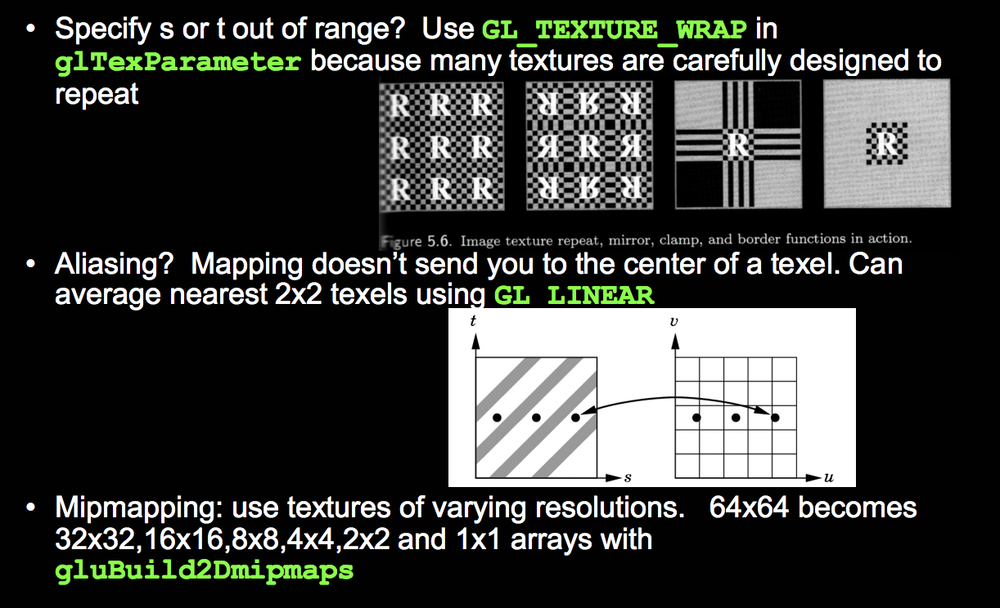
Aliasing
Sampling error when mapping texture images to screen
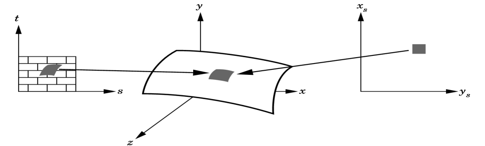
An on-screen pixel may not map neatly to a texel.
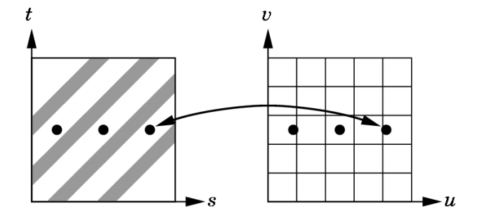
The Beginnings of a Solution: Mipmapping
Pre-calculate how the texture should look at various distances, then use the appropriate texture at each distance. This is called mipmapping.
“Mip” “multum in parvo” or “many things in a small place”
Each mipmap (each image below) represents a level of resolution.
Powers of 2 make things much easier.
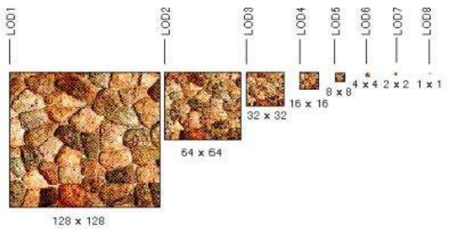
Problem: Clear divisions between different depth levels
Mipmapping alone is unsatisfactory.
Filtering
Take the average of multiple texels to obtain the final RGB value
Typically used along with mipmapping
Bilinear filtering
Average the four surrounding texels
Cheap, and eliminates some aliasing, but does not help with visible LOD divisions
Trilinear filtering
Interpolate between two LODs
Final RGB value is between the result of a bilinear filter at one LOD and a second bilinear filter at the next LOD
Eliminates “seams” between LODs
At least twice as expensive as bilinear filtering
Anisotropic filtering
Basic filtering methods assume that a pixel on-screen maps to a square (isotropic) region of the texture
For surfaces tilted away from the viewer, this is not the case!
Anisotropic filtering
A pixel may map to a rectangular or trapezoidal section of texels—shape filters accordingly and use either bilinear or trilinear filtering
Complicated, but produces very nice results
Side-by-Side Comparison
Texture Generation
Photographs
Drawings
Procedural methods (2D or 3D)
Associate each x,y,z value directly with an s,t,r value in the texture block (sculpting in marble and granite)
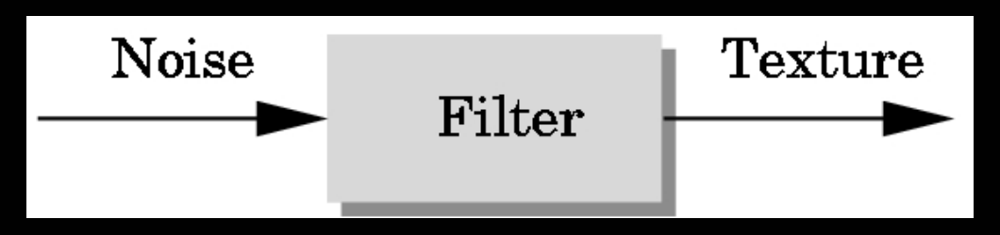
Procedural Methods
Solid Textures
Uses for Texture Mapping
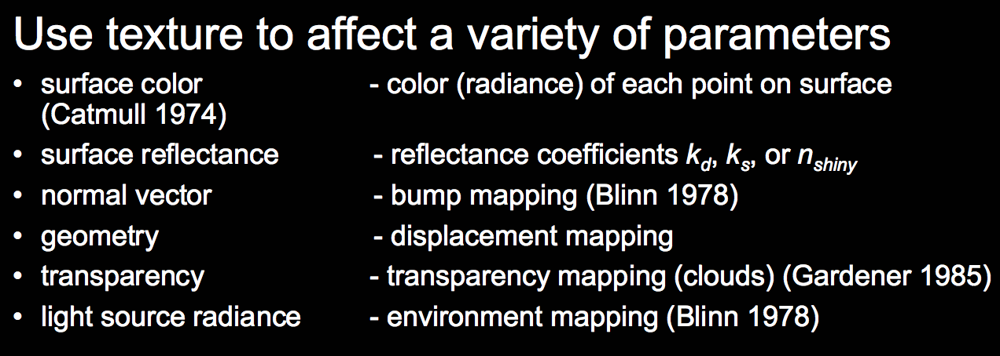
Radiance vs. Reflectance Mapping
Multitexturing
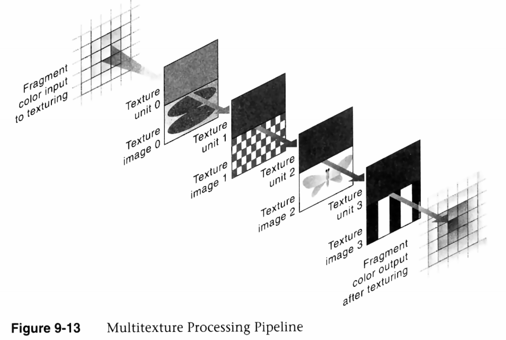
Bump Mapping:A Dirty Trick
Exampe:
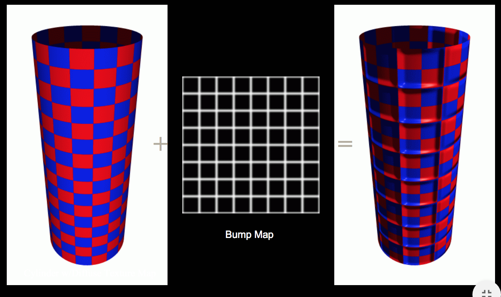
Displacement Mapping
Environment Mapping
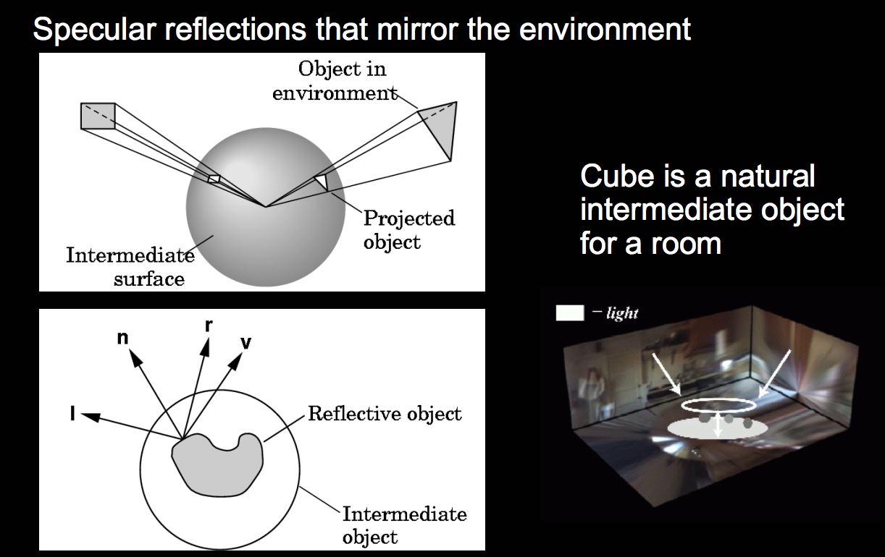
Environment Mapping: Cube Maps
Interpolation and splines
Ray Tracing
Ray tracing
tracing backwards the path of each ray of light entering the camera to find out what objects it encountered, and what light sources it came from!
Each pixel in the created image corresponds to a line of
sight. Start from image not polygon or object as in rendering pipeline approach.
We can trace back this line of sight (ray) to find the nearest object surface it intersects.
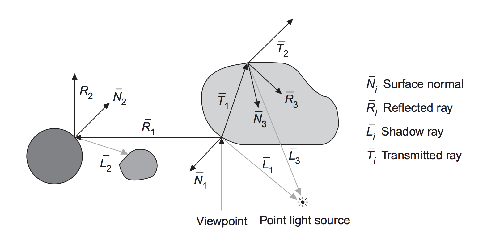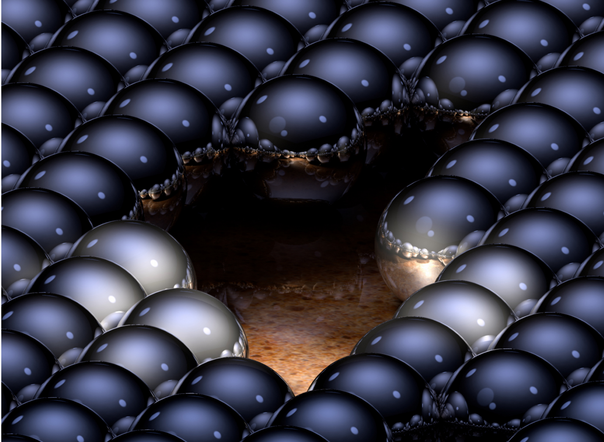
Real-time Ray tracing?
The cardinality (or size) of the ray tracing problem is determined by the number of pixels in the image or viewport, as opposed to the number of polygons in the scene as in the rendering pipeline approach. In addition, ray tracing is made more computationally intensive by the recursive nature of ray tracing (depending upon what order you assume in terms of how many re-reflections of rays you cater for).
Some real-time ray tracing techiques
Quite a large number of approaches to speed up.
Pre-baking,
OpenRL (low level interactive ray tracing API),
Bounding volumes, e.g. Binary space parition trees (BSPs)
. . .
Refraction
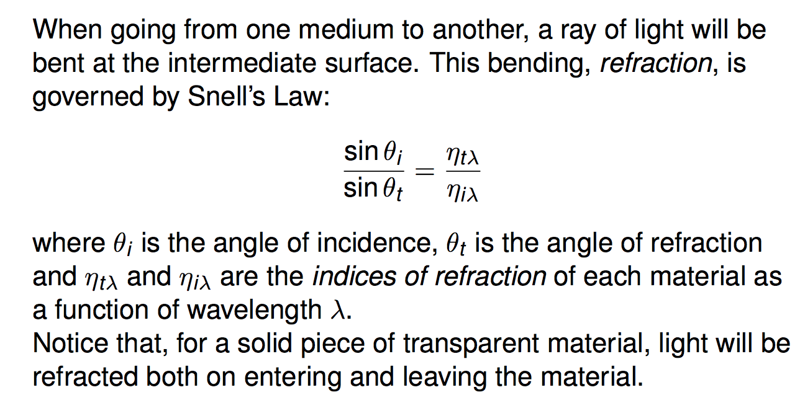
Calculating the refraction vector
Transparency
Shadow volumes & the Stencil Buffer
Scan-line generation of shadows
Kinematics
Kinematics
Forward kinematics for me is:
Apply a behaviour to my robot arm—e.g. rotate one of my arms by pre-determined angles for each joint (degree of freedom)
Apply a steering behaviour to my robot body—e.g. translate myself by a pre-determined vector on the 2D surface (using my wheels)
Inverse kinematics for me is:
How do I configure my robot arm to reach it?—determine all of the previously unknown angles for my joints.
Can my robot arm reach that object?
Is the object reachable from where I am?—do I need a forward kinematics translation by moving adjacent to it?
Forward kinematics
Forward kinematics can be posed as applying homogeneous transformations relative to the coordinate system.
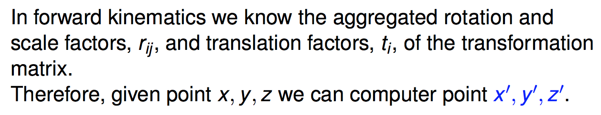
Inverse kinematics
The inverse kinematic problem is one of the most difficult to solve, as a set of simultaneous equations must be solved.
Degrees of freedom in human animation
In the human skeleton, each joint angle is typically specified by three angles and therefore have three degrees of freedom(DOF).
With increased degrees of freedom (more joints) get more possible solutions (or redundancy of movement).
After including, legs, hands, feet, head and a spine will have well over 100 degrees of freedom, possibly without even including fingers and toes!
Solving Inverse Kinematics
Problems can arise in solving simultaneous equations for inverse kinematics, including
the existence of multiple solutions (or joint configurations)
the possible non-existence of any solution (unreachable), or
sigularities of matrix equations (we will see later).
Solution techniques
We can solve simultaneous equations using iterative or algebraic algorithms
Algebraic algorithms
Algebraic techniques for solving linear simultaneous equations are known from the field of numerical methods.
Iterative algorithms
Iterative algorithms work by calculating an approximate solution which converges to the exact solution,
typically be used for solving non-linear simultaneous equations or when numerical stability if paramount important.
Algebraic approach
Note that checking if the determinant is zero requires the concept of "zero" in floating point, which requires the use of a small non-zero constant that is just larger than the maximum expected error as a result of numerical precision
This will depend on the machine you implement on.
Algebraic example
The complexity of matrix algebra
The challenge of Inverse Kinematics
Since solutions to simultaneous equations is central to geometric transformations and inverse kinematics
can’t efficiently calculate inverse matrices directly for solving simultaneous equations fast enough for real time, and
can’t efficiently check for singularities necessary to guarantee numerical stability or meaningful solutions.
In practice iterative algorithms are used that reduce the complexity of the arithmetic.